Day 1
Table of Contents
Day 1
Germany v Scotland
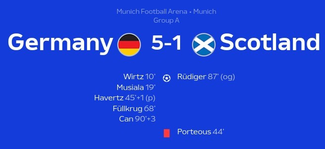
Too easy from the hosts. 2 brilliant wonderkids leading the scoring. Scotland never had a sniff. What a way to kick this all off with a dominant, controlling win from the hosts in Munich. I really have good hopes for these guys because the blend of experience and youth that they have is actually really perfect and it woks well.
1st Half
We start it all off with a great long pass from Kroos to Kimmich who found Wirtz on the edge of the box and he struck it well and Gunn just couldn’t keep it out after he did get a palm to it but it hit the post and went in and what a storyline for the 21 year old after his horrifying injury to come back and lead Leverkusen to an invincible double and now the first goal of this Euros. Him and Musiala being on the same team feels illegal. Next up was the other threat from the wings: Musiala. Gundogan plays a brilliant ball to Havertz who holds it up before cutting it back for Musiala who rifled it right on the roof of the net. Brilliant composure. The next one was a penalty and one thing I’d like to say about this is, the VAR checks and the offsides were so perfectly done(PGMOL take some freaking notes) and it felt so nice seeing it after I watched a season of horrendous officiating in the Premier League. So what happened was Porteous felled Gundogan as he took the ball and it wasn’t given at first before VAR called the ref to the screen and he didn’t hesitate after having another look pointing to the spot. Havertz made no mistake sending Gunn down the right as he slotted it in the middle.
2nd Half
On came Fullkrug for Havertz in the second half and WHAT an impact he made. He was guilty of missing a gilt-edged opportunity in the Champions League final for Dortmund but here he was lethal. First Musiala slots a pass in for Gundogan who slightly messes up but the loose ball fell to Fullkrug who unleashed a killer half-volley right in the top right corner. You ain’t saving those. Gives it that “He must have a foot like a traction engine” kind of vibes 😤. Later on he did score another one where his shot was saved by Gunn and he bundled it in but it was ruled out for offside. This follows that World Cup rule we had where the whole body must be before the last defender and he was slightly off. Later on, Rudiger got bored of keeping a clean sheet and from a Robertson free kick, Fullkrug got a touch and McKenna headed it right at Rudiger who could only just direct it past his own net. Like I said, he probably got bored 😅. There was a final response and a finisher to this rout and it came from Emre Can. He was actually called up as a replacement for Aleksander Pavlovic who sadly is missing this tournament due to tonsillitis(Feel bad for the kid but he’s got a long way and he’s got the potential). Coming to the goal, Sane found Muller who made a great run into the box and he found Can right at the edge of the box and he places a perfect shot right past Gunn’s outstretched hand. It did hit him slightly but I think you’ve got to get down really quickly for those kinds of shots. Wirtz was one and this was another. In the end, it was a right proper humbling by the Germans and Scotland have it all to do in the rest of the matches because Germany are real imperious to top this group.
Player of the Match - J. Musiala
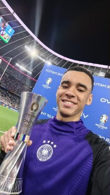
What a game he’s had and him and Wirtz are thriving in this Nagelsmann system. He was smooth with his dribbling and was running the show in the forward line with Wirtz. He took his goal when the chance did rise and was a constant threat. More of the same from him and Germany can go far.
Lineups
- Ratings from Fotmob
Germany
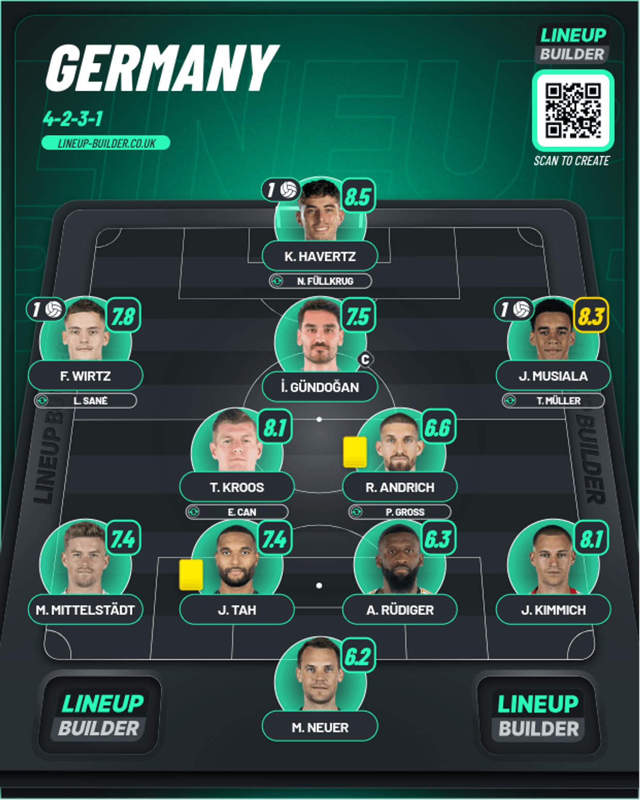
Scotland
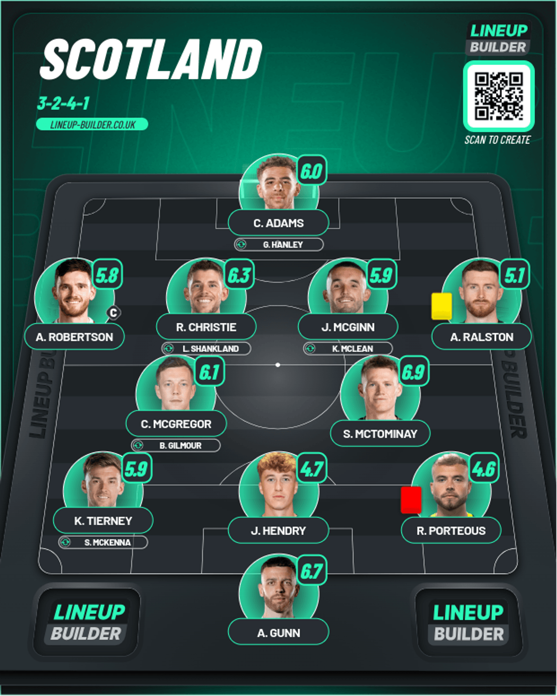
Hungary v Switzerland

Talk about instant impact. Swiss Dark Arts over Hungary Heart. Mistake-prone when it mattered. My prediction is looking grim to be honest because I predicted them for 4th but hoestly they got the experience to hang on to a lead and they showed it here. Their passing was pinpoint and when they created the chances they were there to finish it and it was great to see.
1st Half
We go to minute 12 where a really great ball from Aebischer to Duah and he made no mistake with the finish. In what was his 2nd cap only at 27 years old. What an impact he’s made on the coach for him to trust him. I’m impressed. Initially it was ruled out for offside but after a quick check it was given after he was shown to be miles on. Orban was honestly slow to react to the run made by Duah and they duly paid. After that, it was pure Swiss domination and Hungary could barely string passes properly together and Szoboszlai looked very isolated and Kerkez also could hardly do much because Hungary were pinned in their own half. After a good save by Gulacsi after ANOTHER mistake, the second did come from Aebischer after a great pass from Freuler and he made no mistake curling it in perfectly from the edge of the box.
2nd Half
We go to the next 45 where Hungary actually started showing some promising signs that they could score and bring it level and it did show after a great chance for Varga but he put it wide of the post and Sommer was rooted to the spot. There was redemption however as he did get another chance and got ahead of Aebischer on the end of a cross by Szoboszlai and it was well taken. They did push hard after it and there was a bit of the dark arts from the experienced Swiss which I think ultimately broke them down and when Orban made a mistake with his header super sub Breel Embolo(Highly injury prone and he managed to finally make an appearance) pounced and managed to perfectly chip Gulacsi to put the game to bed
Player of the Match - G. Xhaka
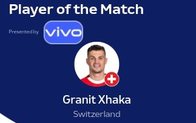
This was a complete performance. After spearheading Leverkusen to an invincible double, he lead the midfield really well in this match being everywhere in front of the defense and starting a load of moves. Well deserved.
Lineups
- Ratings from Fotmob
Hungary
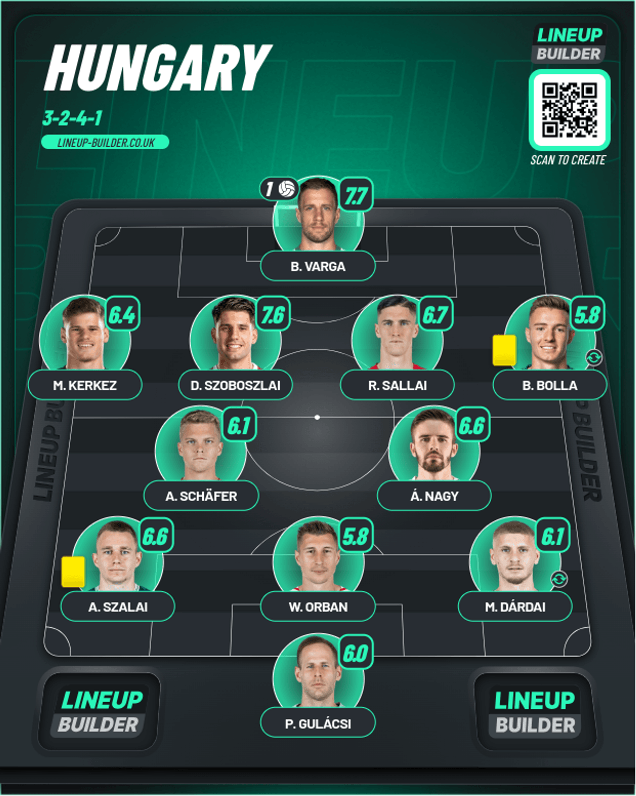
DISCLAIMER: This database didn’t contain the following players:
- Attila Fiola - Played at RWB instead of Bolla
- Adam Lang - Played at CB instead of Dardai
Switzerland
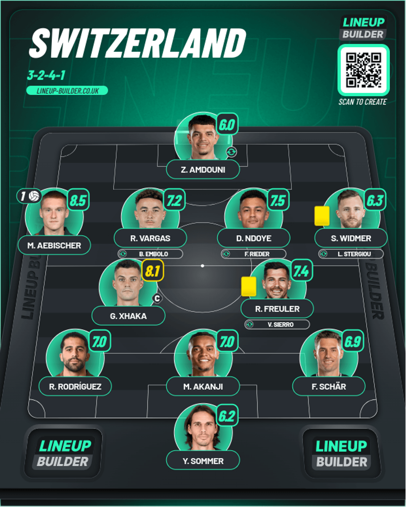
DISCLAIMER: This database didn’t contain the following player:
- Kwadwo Duah - The damn goalscorer of the first goal
Spain v Croatia
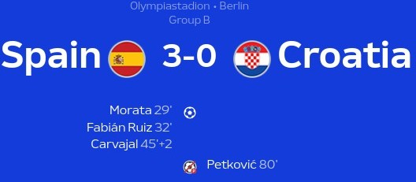
Well-rounded Spain. Winding down Croatia. Enough with the Youngest ever crap. What a win this was from the new look Spain. And the ball they play isn’t that bad either. I think it is a combination of that along with the fact that the midfield of Croatia has got:
- A guy who hardly played for his club - Modric
- A guy who is winding down in Saudi - Brozovic
- A guy who has been affected by Pep Roulette - Kovacic
Given all of this, I can understand why they’re lagging behind and the chances also just won’t go in. Even a mess up in VAR handed them a penalty and they couldn’t even score THAT properly. Let’s get into it.
1st Half
We are reaching about the halfway mark and Fabian Ruiz slips in Morata brilliantly and he kept his composure to slot it perfectly past Livakovic to open the scoring. It got even better after a couple minutes when Yamal passes it to Pedri who finds Ruiz who uses brilliant close control before picking the bottom right corner accurately. Croatia have no answer and it piled on even more so when a corner routine was executed to perfection by Williams, Ruiz and Yamal with the latter putting in a pinpoint cross to Carvajal who turned it home. There was some half chances you could say with Croatia when Majer found the side netting and Gvardiol pulled it back but nobody could bundle it in when Simon missed it.
2nd Half
Spain were on the front foot AGAIN in the second half when Pedri pushed forward and teed up Yamal who couldn’t find the corner and found Livakovic instead who parried it away well. Then we had a HUGE moment where we had a tussle in the box and the ball just didn’t go in before Cucurella heroically blocked the shot from Stanisic. Like I said, this was a well-rounded performance. Towards the end however there was a bit of complacency when Simon messed up a pass and Petkovic had an open goal to put it into but Rodri brought him right down as the last man. But on a replay, it seems to be a dive actually. Looking back on it, it turned out to be double jeopardy because he made a tackle to bring the player down and he should have been sent off but he wasn’t because SURPRISE SURPRISE the one time VAR didn’t work was because we had an English referee 😡. So after they were gifted a penalty they did bundle it in after Petkovic took the worst penalty ever and Perisic squared it for him but however it was ruled out because Perisic had encroached on the penalty area. In the end, it was a poor end for Croatia and they will have to do better against Albania.
Player of the Match - F. Ruiz
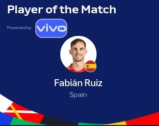
A really good performance from him and he justified his selection as well as the others like Cucurella, Simon and many more. Played a brilliant pass for Morata to open the scoring and got on it a couple minutes later with a brilliant bit of close control and deserved it hands down.
Lineups
- Ratings from Fotmob
Spain
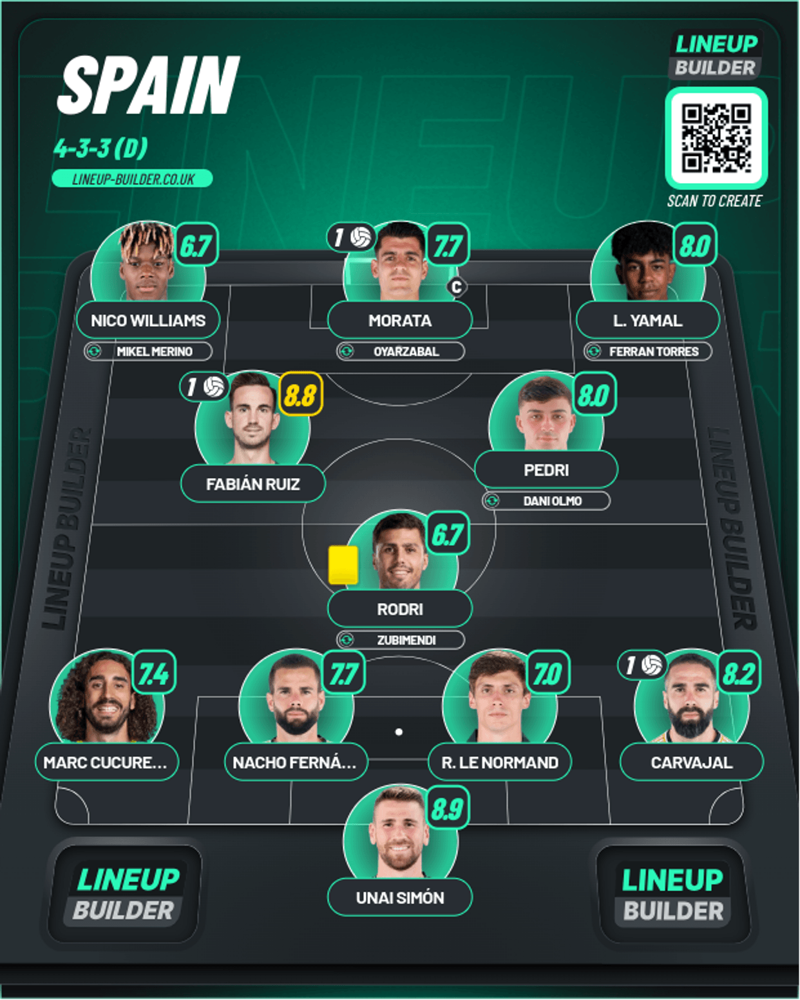
Croatia
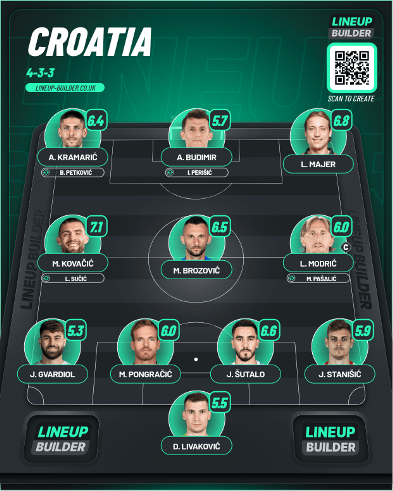